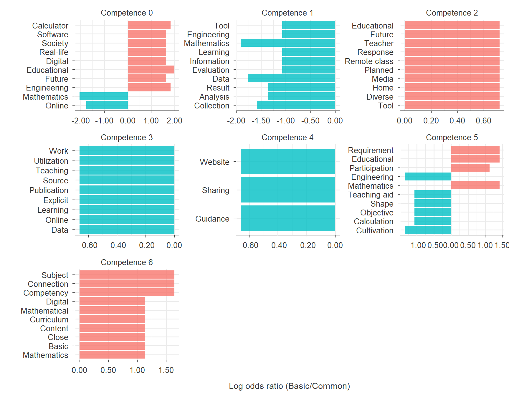
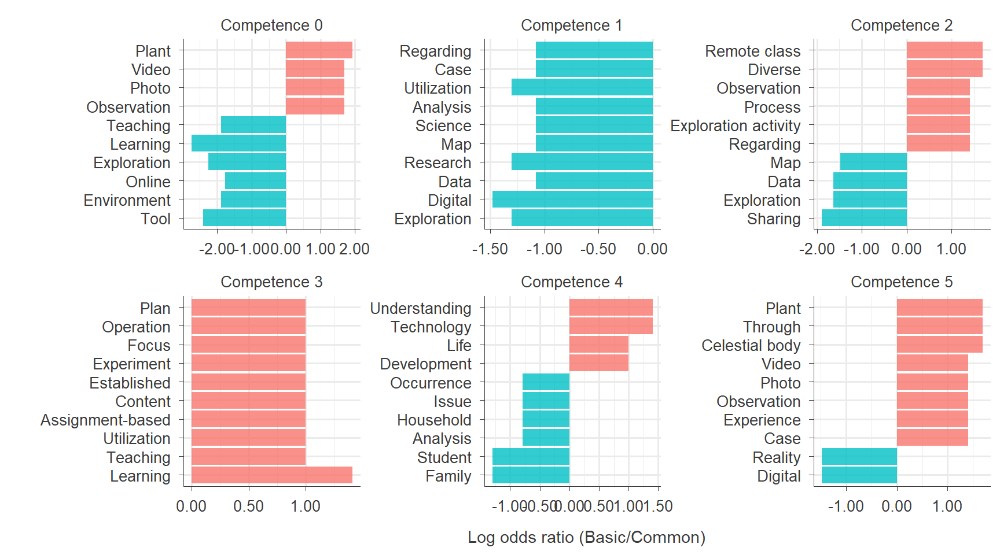
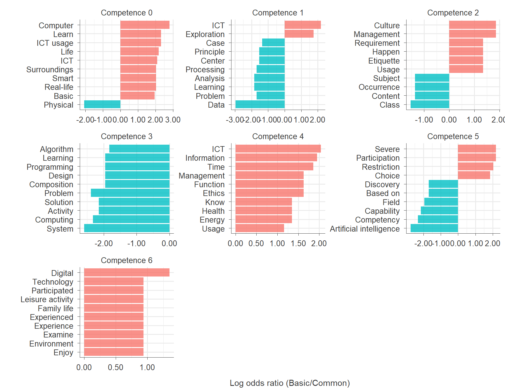

# install.packages('devtools')
# devtools::install_github('haven-jeon/KoNLP')Analysis of Digital Literacy in Special Education Curriculum (Mathematics, Science, and ICT) Using Text Mining
Install R packages
Load R packages
suppressPackageStartupMessages({
library(readxl)
library(openxlsx)
library(officer)
library(flextable)
library(tidyr)
library(magrittr)
library(tidyverse)
library(purrr)
library(dplyr)
library(tidyr)
library(stringr)
library(KoNLP)
library(tidytext)
library(plotly)
library(ggplot2)
library(DT)
library(scales)
})Code
data <- read_excel("data/data.xlsx")
data <- data %>% mutate(across(c(type, subject, construct, coding1, coding2), as.factor))
data_filtered <- data %>%
mutate(document = paste(id, "_", subject, "_", type, sep = "")) %>%
select(document, everything()) %>%
filter(!is.na(coding1) | !is.na(coding2))
long_data_filtered <- data_filtered %>%
pivot_longer(
cols = starts_with("coding"),
names_to = "criteria",
values_to = "coding") %>%
filter(!is.na(coding)) %>%
select(document, everything())
long_data_filtered <- long_data_filtered %>%
mutate(competence = as.factor(gsub("\\..*", "", coding)))
long_data_filtered$competence <- as.factor(long_data_filtered$competence)
levels(long_data_filtered$competence) <- c("Competence 0",
"Competence 1",
"Competence 2",
"Competence 3",
"Competence 4",
"Competence 5",
"Competence 6")
math_filtered <- data_filtered %>%
filter(subject == "Math")
long_data_math_filtered <- math_filtered %>%
pivot_longer(
cols = starts_with("coding"),
names_to = "criteria",
values_to = "coding") %>%
select(document, everything())
science_filtered <- data_filtered %>%
filter(subject == "Science")
long_data_science_filtered <- science_filtered %>%
pivot_longer(
cols = starts_with("coding"),
names_to = "criteria",
values_to = "coding") %>%
select(document, everything())
ict_filtered <- data_filtered %>%
filter(subject == "ICT")
long_data_ict_filtered <- ict_filtered %>%
pivot_longer(
cols = starts_with("coding"),
names_to = "criteria",
values_to = "coding") %>%
select(document, everything())
long_data_filtered$subject <- factor(long_data_filtered$subject, levels = c("Math", "Science", "ICT"))
long_data_filtered$type <- factor(long_data_filtered$type, levels = c("Basic", "Common"))
table <- long_data_filtered %>%
group_by(competence, coding, subject, type) %>%
summarise(Count = n()) %>%
group_by(subject) %>%
mutate(Percentage = case_when(
subject == "Math" ~ Count / 80 * 100,
subject == "Science" ~ Count / 101 * 100,
subject == "ICT" ~ Count / 401 * 100
)) %>%
mutate(Freq_Percent = paste0(Count, " (", round(Percentage, 1), "%)")) %>%
select(-Count, -Percentage) %>%
pivot_wider(names_from = subject, values_from = Freq_Percent, values_fill = list(Freq_Percent = "0 (0%)")) %>%
ungroup()
table_flex <- table %>%
flextable() %>%
fontsize(size = 11) %>%
merge_v(j = ~ competence) %>%
theme_vanilla() %>%
autofit()
table_flexcompetence | coding | type | Math | Science | ICT |
|---|---|---|---|---|---|
Competence 0 | 0.1 | Basic | 7 (8.8%) | 6 (5.9%) | 35 (8.7%) |
0.1 | Common | 15 (18.8%) | 16 (15.8%) | 26 (6.5%) | |
0.2 | Basic | 5 (6.2%) | 7 (6.9%) | 31 (7.7%) | |
0.2 | Common | 5 (6.2%) | 12 (11.9%) | 24 (6%) | |
Competence 1 | 1.1 | Common | 4 (5%) | 3 (3%) | 8 (2%) |
1.1 | Basic | 0 (0%) | 0 (0%) | 12 (3%) | |
1.2 | Common | 8 (10%) | 4 (4%) | 17 (4.2%) | |
1.2 | Basic | 0 (0%) | 1 (1%) | 3 (0.7%) | |
1.3 | Common | 2 (2.5%) | 5 (5%) | 13 (3.2%) | |
1.3 | Basic | 0 (0%) | 0 (0%) | 4 (1%) | |
Competence 2 | 2.1 | Basic | 4 (5%) | 3 (3%) | 2 (0.5%) |
2.1 | Common | 3 (3.8%) | 2 (2%) | 4 (1%) | |
2.2 | Basic | 1 (1.2%) | 1 (1%) | 4 (1%) | |
2.2 | Common | 0 (0%) | 6 (5.9%) | 6 (1.5%) | |
2.3 | Common | 0 (0%) | 1 (1%) | 7 (1.7%) | |
2.3 | Basic | 0 (0%) | 0 (0%) | 6 (1.5%) | |
2.4 | Basic | 0 (0%) | 2 (2%) | 2 (0.5%) | |
2.4 | Common | 0 (0%) | 5 (5%) | 8 (2%) | |
2.5 | Common | 1 (1.2%) | 0 (0%) | 5 (1.2%) | |
2.5 | Basic | 0 (0%) | 0 (0%) | 6 (1.5%) | |
2.6 | Basic | 0 (0%) | 0 (0%) | 2 (0.5%) | |
Competence 3 | 3.1 | Basic | 0 (0%) | 1 (1%) | 2 (0.5%) |
3.3 | Common | 1 (1.2%) | 0 (0%) | 1 (0.2%) | |
3.4 | Basic | 0 (0%) | 0 (0%) | 1 (0.2%) | |
3.4 | Common | 0 (0%) | 0 (0%) | 34 (8.5%) | |
Competence 4 | 4.1 | Common | 1 (1.2%) | 1 (1%) | 1 (0.2%) |
4.1 | Basic | 0 (0%) | 0 (0%) | 2 (0.5%) | |
4.2 | Common | 0 (0%) | 1 (1%) | 1 (0.2%) | |
4.2 | Basic | 0 (0%) | 0 (0%) | 3 (0.7%) | |
4.3 | Basic | 0 (0%) | 2 (2%) | 6 (1.5%) | |
4.3 | Common | 0 (0%) | 4 (4%) | 2 (0.5%) | |
4.4 | Basic | 0 (0%) | 0 (0%) | 2 (0.5%) | |
Competence 5 | 5.1 | Basic | 1 (1.2%) | 1 (1%) | 7 (1.7%) |
5.1 | Common | 1 (1.2%) | 1 (1%) | 23 (5.7%) | |
5.2 | Basic | 6 (7.5%) | 4 (4%) | 24 (6%) | |
5.2 | Common | 4 (5%) | 0 (0%) | 1 (0.2%) | |
5.3 | Common | 3 (3.8%) | 5 (5%) | 5 (1.2%) | |
5.3 | Basic | 0 (0%) | 4 (4%) | 0 (0%) | |
5.4 | Common | 4 (5%) | 3 (3%) | 20 (5%) | |
5.4 | Basic | 0 (0%) | 0 (0%) | 13 (3.2%) | |
5.5 | Basic | 0 (0%) | 0 (0%) | 7 (1.7%) | |
5.5 | Common | 0 (0%) | 0 (0%) | 14 (3.5%) | |
Competence 6 | 6.1 | Basic | 2 (2.5%) | 0 (0%) | 4 (1%) |
6.1 | Common | 0 (0%) | 0 (0%) | 3 (0.7%) | |
6.2 | Basic | 2 (2.5%) | 0 (0%) | 0 (0%) |
Code
# doc <- read_docx()
#
# doc <- doc %>%
# body_add_par("Frequency Table", style = "heading 1")
#
# doc <- doc %>%
# body_add_flextable(table_flex)
#
# print(doc, target = "results/frequency_table.docx")Words in Basic vs. Common Mathematics Special Education Curriculum Across competences
Code
# Remove specific patterns from a text column.
rm_patterns <- function(data, text_col, ...) {
homepage <- "(HTTP(S)?://)?([A-Z0-9]+(-?[A-Z0-9])*\\.)+[A-Z0-9]{2,}(/\\S*)?"
date <- "(19|20)?\\d{2}[-/.][0-3]?\\d[-/.][0-3]?\\d"
phone <- "0\\d{1,2}[- ]?\\d{2,4}[- ]?\\d{4}"
email <- "[A-Z0-9.-]+@[A-Z0-9.-]+"
hangule <- "[ㄱ-ㅎㅏ-ㅣ]+"
punctuation <- "[:punct:]"
text_p <- "[^가-힣A-Z0-9]"
cleaned_data <- data %>%
mutate(
processed_text = !!sym(text_col) %>%
str_remove_all(homepage) %>%
str_remove_all(date) %>%
str_remove_all(phone) %>%
str_remove_all(email) %>%
str_remove_all(hangule) %>%
str_replace_all(punctuation, " ") %>%
str_replace_all(text_p, " ") %>%
str_squish()
)
return(cleaned_data)
}
# Extract morphemes (noun and verb families).
extract_pos <- function(data, text_col) {
pos_init <- data %>%
unnest_tokens(pos_init, text_col, token = SimplePos09) %>%
mutate(pos_n = row_number())
noun <- pos_init %>%
filter(str_detect(pos_init, "/n")) %>%
mutate(pos = str_remove(pos_init, "/.*$"))
verb <- pos_init %>%
filter(str_detect(pos_init, "/p")) %>%
mutate(pos = str_replace_all(pos_init, "/.*$", "다"))
pos_td <- bind_rows(noun, verb) %>%
arrange(pos_n) %>%
filter(nchar(pos) > 1) %>%
tibble()
return(pos_td)
}
# Remove stop words or irrelevant words.
stop_words <- c("다음", "고려한", "되다", "갖추다", "있다", "하다", "않다", "고려", "관련", "관련하", "우리", "있으", "하였", "피다", "일다", "이때", "내다", "이루다", "느끼다", "기르다", "살다", "오다", "위하다")
long_data_filtered$subject <- factor(long_data_filtered$subject, levels = c("Math", "Science", "ICT"))
long_data_filtered$type <- factor(long_data_filtered$type, levels = c("Basic", "Common"))
long_data_pos <- long_data_filtered %>%
mutate(subject_type_id = paste(subject, type, id, sep = "_")) %>%
rm_patterns(text_col = "unit") %>%
extract_pos(text_col = "processed_text") %>%
filter(!grepl("[0-9]", pos) &
!pos %in% stop_words)
long_data_pos$pos <- case_when(
long_data_pos$pos== "지도한" ~ "지도",
long_data_pos$pos== "과학적" ~ "과학",
long_data_pos$pos== "수학적" ~ "수학",
long_data_pos$pos== "학생들이" ~ "학생",
long_data_pos$pos== "학생들" ~ "학생",
long_data_pos$pos== "앱을" ~ "앱",
long_data_pos$pos== "환류할" ~ "환류",
long_data_pos$pos== "해석한" ~ "해석",
long_data_pos$pos== "느끼" ~ "느끼다",
long_data_pos$pos== "기울" ~ "기울이다",
long_data_pos$pos== "살펴보" ~ "살펴보다",
long_data_pos$pos== "바탕으" ~ "바탕으로",
long_data_pos$pos== "기르" ~ "기르다",
long_data_pos$pos== "해결력과" ~ "해결력",
long_data_pos$pos== "대푯값과" ~ "대푯값",
long_data_pos$pos== "그리거" ~ "그리다",
long_data_pos$pos== "문해력을" ~ "문해력",
long_data_pos$pos== "연계함" ~ "연계",
TRUE ~ as.character(long_data_pos$pos)
)
long_data_pos <- long_data_pos %>%
mutate(competence = as.factor(gsub("\\..*", "", coding)))
sliced_math <- long_data_pos %>%
filter(subject == "Math") %>%
count(competence, type, pos, sort = TRUE) %>%
pivot_wider(names_from = type, values_from = n, values_fill = 0) %>%
mutate(n = Basic + Common) %>%
mutate(odds_Basic = ((Basic+1)/sum(Basic+1)),
odds_Common = ((Common+1)/sum(Common+1))) %>%
mutate(odds_ratio = odds_Basic / odds_Common) %>%
mutate(log_odds_ratio = log(odds_Basic / odds_Common)) %>%
group_by(competence) %>%
slice_max(abs(log_odds_ratio), n = 10, with_ties = FALSE) %>%
select(competence, pos, Basic, Common, n, odds_Basic, odds_Common, odds_ratio, log_odds_ratio)
# write.xlsx(sliced_math, "results/sliced_math.xlsx")
sliced_math <- read_excel("results/sliced_math_en.xlsx")
gg_math <- sliced_math %>%
arrange(abs(log_odds_ratio)) %>%
mutate(pos = reorder(pos, log_odds_ratio)) %>%
mutate_if(is.numeric, ~round(., 2)) %>%
group_by(log_odds_ratio < 0) %>%
ggplot(aes(pos, log_odds_ratio, fill = log_odds_ratio < 0)) +
geom_col(alpha = 0.8) +
scale_y_continuous(labels = label_number(accuracy = 0.01)) +
coord_flip() +
facet_wrap(~ competence, ncol = 3, scales = "free") +
theme_minimal(base_size = 12) +
theme(
axis.line = element_line(color = "#3B3B3B", linewidth = 0.3),
axis.ticks = element_line(color = "#3B3B3B", linewidth = 0.3),
strip.text.x = element_text(size = 10, color = "#3B3B3B"),
axis.text.x = element_text(size = 10, color = "#3B3B3B"),
axis.text.y = element_text(size = 10, color = "#3B3B3B"),
axis.title = element_text(size = 11, color = "#3B3B3B"),
axis.title.x = element_text(margin = margin(t = 10)),
axis.title.y = element_text(margin = margin(r = 10)),
legend.title = element_text(size = 10, color = "#3B3B3B"),
legend.text = element_text(size = 10, color = "#3B3B3B"),
legend.title.align = 0.5,
legend.position = "none") +
labs(
x = "",
y = "Log odds ratio (Basic/Common)",
fill = ""
)
# gg_math %>% ggplotly(width = 1500, height = 500)
gg_math 
Code
ggsave("results/gg_math.png", plot = gg_math, width = 9, height = 7)Words in Basic vs. Common Science Special Education Curriculum Across competences
Code
sliced_science <- long_data_pos %>%
filter(subject == "Science") %>%
count(competence, type, pos, sort = TRUE) %>%
pivot_wider(names_from = type, values_from = n, values_fill = 0) %>%
mutate(n = Basic + Common) %>%
mutate(odds_Basic = ((Basic+1)/sum(Basic+1)),
odds_Common = ((Common+1)/sum(Common+1))) %>%
mutate(odds_ratio = odds_Basic / odds_Common) %>%
mutate(log_odds_ratio = log(odds_Basic / odds_Common)) %>%
group_by(competence) %>%
slice_max(abs(log_odds_ratio), n = 10, with_ties = FALSE) %>%
select(competence, pos, Basic, Common, n, odds_Basic, odds_Common, odds_ratio, log_odds_ratio)
# write.xlsx(sliced_science, "results/sliced_science.xlsx")
sliced_science <- read_excel("results/sliced_science_en.xlsx")
gg_science <- sliced_science %>%
arrange(abs(log_odds_ratio)) %>%
mutate(pos = reorder(pos, log_odds_ratio)) %>%
mutate_if(is.numeric, ~round(., 2)) %>%
group_by(log_odds_ratio < 0) %>%
ggplot(aes(pos, log_odds_ratio, fill = log_odds_ratio < 0)) +
geom_col(alpha = 0.8) +
scale_y_continuous(labels = label_number(accuracy = 0.01)) +
coord_flip() +
facet_wrap(~ competence, ncol = 3, scales = "free") +
theme_minimal(base_size = 12) +
theme(
axis.line = element_line(color = "#3B3B3B", linewidth = 0.3),
axis.ticks = element_line(color = "#3B3B3B", linewidth = 0.3),
strip.text.x = element_text(size = 10, color = "#3B3B3B"),
axis.text.x = element_text(size = 10, color = "#3B3B3B"),
axis.text.y = element_text(size = 10, color = "#3B3B3B"),
axis.title = element_text(size = 11, color = "#3B3B3B"),
axis.title.x = element_text(margin = margin(t = 10)),
axis.title.y = element_text(margin = margin(r = 10)),
legend.title = element_text(size = 10, color = "#3B3B3B"),
legend.text = element_text(size = 10, color = "#3B3B3B"),
legend.title.align = 0.5,
legend.position = "none") +
labs(
x = "",
y = "Log odds ratio (Basic/Common)",
fill = ""
)
# gg_science %>% ggplotly(width = 1300, height = 500)
gg_science
Code
ggsave("results/gg_science.png", plot = gg_science, width = 9, height = 5)Words in Basic vs. Common ICT Special Education Curriculum Across competences
Code
sliced_ict <- long_data_pos %>%
filter(subject == "ICT") %>%
count(competence, type, pos, sort = TRUE) %>%
pivot_wider(names_from = type, values_from = n, values_fill = 0) %>%
mutate(n = Basic + Common) %>%
mutate(odds_Basic = ((Basic+1)/sum(Basic+1)),
odds_Common = ((Common+1)/sum(Common+1))) %>%
mutate(odds_ratio = odds_Basic / odds_Common) %>%
mutate(log_odds_ratio = log(odds_Basic / odds_Common)) %>%
group_by(competence) %>%
slice_max(abs(log_odds_ratio), n = 10, with_ties = FALSE) %>%
select(competence, pos, Basic, Common, n, odds_Basic, odds_Common, odds_ratio, log_odds_ratio)
# write.xlsx(sliced_ict, "results/sliced_ict.xlsx")
sliced_ict <- read_excel("results/sliced_ict_en.xlsx")
gg_ict <- sliced_ict %>%
arrange(abs(log_odds_ratio)) %>%
mutate(pos = reorder(pos, log_odds_ratio)) %>%
mutate_if(is.numeric, ~round(., 2)) %>%
group_by(log_odds_ratio < 0) %>%
ggplot(aes(pos, log_odds_ratio, fill = log_odds_ratio < 0)) +
geom_col(alpha = 0.8) +
scale_y_continuous(labels = label_number(accuracy = 0.01)) +
coord_flip() +
facet_wrap(~ competence, ncol = 3, scales = "free") +
theme_minimal(base_size = 12) +
theme(
axis.line = element_line(color = "#3B3B3B", linewidth = 0.3),
axis.ticks = element_line(color = "#3B3B3B", linewidth = 0.3),
strip.text.x = element_text(size = 10, color = "#3B3B3B"),
axis.text.x = element_text(size = 10, color = "#3B3B3B"),
axis.text.y = element_text(size = 10, color = "#3B3B3B"),
axis.title = element_text(size = 11, color = "#3B3B3B"),
axis.title.x = element_text(margin = margin(t = 10)),
axis.title.y = element_text(margin = margin(r = 10)),
legend.title = element_text(size = 10, color = "#3B3B3B"),
legend.text = element_text(size = 10, color = "#3B3B3B"),
legend.title.align = 0.5,
legend.position = "none") +
labs(
x = "",
y = "Log odds ratio (Basic/Common)",
fill = ""
)
# gg_ict %>% ggplotly(width = 1800, height = 500)
gg_ict
Code
ggsave("results/gg_ict.png", plot = gg_ict, width = 9, height = 7)